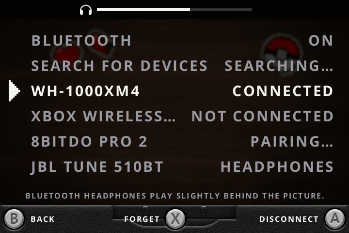
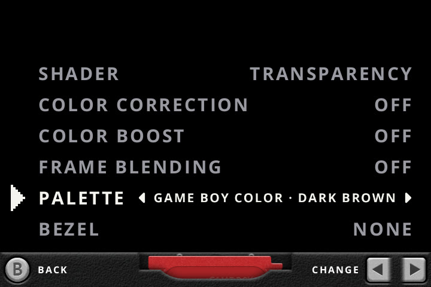

- Problem
- Game Boy games were made to be linked by a cable: to trade Pokémon, or to race in Mario Kart. A handheld that plays them through an emulator (a program that acts like the original console) has no such cable. Over the air, one message that arrives a little late can break the game’s link, and two handhelds running different emulators did not always agree at all.
- Result
- Slot could already link Game Boy Advance games over Wi-Fi. Now Game Boy and Game Boy Color games link too, four players can share a single cartridge, and two handhelds on different emulators link and trade, all handheld to handheld by radio. On the newest build, 28 of 28 linked-play checks passed on four handhelds. A whole game can also be sent to another handheld in seconds. Still in progress: players other than the host feel more button delay than the host.
Read the script
Game Boy link play with no cable, added to Slot, Brandon Kowalski’s open-source game menu for handhelds. These games were made for a cable. Over the air, one late message can break the link. In lockstep play, only button presses cross the air. Each handheld runs every console, and the host checks they still match. Four players from one cartridge: 20 of 20 Mario Kart sessions stayed in sync. A whole game, 16 MB, moves to another handheld in 2.8 seconds. It is tested on four handhelds that link straight to each other, with no router in between. Link play, without the cable. Details are below.
Slot is a free, open-source game menu for small handheld game players, made by Brandon Kowalski and built around Game Boy games. Everything on this page is my work on top of it, in my own copy of the project: linked play over the air, four players at once, sending a game to another handheld, plus TV output, Bluetooth headphones and screen options. None of it has been sent to the original project. My part: what to build, in what order, and what counts as working. AI wrote the code, built the test rig and ran the tests on my four handhelds.
My rules
- Only handheld-to-handheld radio counts
- Any emulator, at full speed
- Keep fixing until it all passes
AI wrote
the code and the test rig
Proven
- On four real handhelds, never only on the Mac
- Every console’s copy compared while playing
- Saved games checked unchanged after every set
The cases that stood out
- Four players, one cartridge. On the original console, one copy of Mario Kart: Super Circuit was enough for four players: the others downloaded a small version of the game through the cable. Here the host handheld sends that download, then every handheld runs all four consoles side by side, and only the button presses cross the air. The host compares every console’s copy about once a second. Result by radio: 20 of 20 four-player sessions in sync with the host on either Game Boy Advance emulator, and 12 of 12 Kirby sessions at 2 and 4 players.
- A Pokémon trade between two different emulators. On a real cable, one console sets the pace and the other follows. With Pokémon Crystal on Gambatte on one handheld and mGBA on the other, a late message could leave both sides trying to set the pace, and about 1 in 4 trades failed. The fix: the host always leads. Afterwards, 20 of 20 Crystal and Red trades passed by radio, in both orders.
- Four handhelds, real button presses. Each with its own cartridge, all four played Mario Kart from a script of real button presses. 16 of 16 runs stayed in sync, with 48 of 48 copies matching in every run.
- Send a whole game to another handheld. Share Game moves a game by radio: 16 MB in 2.8 seconds. It was tested between all 12 pairs of the four handhelds, and when a copy is already there, when the other player says no, and when the link is cut halfway. Every failure was in the test itself, its timing or its menu steps; each was fixed and passed when run again.
- Two links in one room. The handhelds link straight to each other by their own Wi-Fi radio, with no router. Two separate 2-player links in the same room ran at once: 12 of 12 runs passed.
- Different emulators, one link. Game Boy Advance games run on mGBA or gpSP. A Pokémon Emerald trade with mGBA on one handheld and gpSP on the other passed 4 of 4 times by radio, where it had failed 6 of 6 times before the fix.
- One cartridgeon the host handheld only
- The downloadthe host sends the small game to each player by radio
- Every console on every handheldeach one runs all four, side by side
- Only buttons traveleach player’s presses go to everyone
- Checked while playingthe host compares every copy about once a second
- Same race on four screens20 of 20 sessions in sync by radio
The newest build, by radio
The 28 linked-play checks run on four handhelds on November 21, 2026, by kind. Every one passed.
The hard part
Making two programs that were never meant to talk behave like one cable. Each emulator keeps its own time, and a game that waits a fraction of a second too long for its partner drops the link. Most of the work was finding exactly which late message broke which game, then proving the fix on the handhelds, not just on the Mac.
Also built: screens, sound and a TV
Pictures of the handheld’s own menus at its real screen size, taken by the project’s automatic tests.
Bluetooth headphones

Colors while playing

On a TV

One sleep setting

Decisions I made
- Only handheld-to-handheld radio counts. A test that went through the home router could find a fault, but never counted as a pass. The trade-off I accepted: slower testing, because the handhelds drop off the home network for every linked test.
- The host always leads. Whatever the two games agree between themselves, the host’s console keeps the link’s pace. That removed the 1-in-4 failed trades between different emulators.
- Wait a little, never rewind. Each handheld waits a few frames for the others, set from a measured round trip (4 frames on a close link; a frame is a sixtieth of a second), instead of guessing ahead and rewinding when it guessed wrong.
- Fixed on the handhelds, not just on the Mac. A failure seen on the handhelds was fixed, rebuilt and tested again there. A pass on the Mac alone never closed it.
How it was tested
- Four real handhelds, no hands. A test rig on the Mac installs each build, starts the games and presses the buttons on all four handhelds. The link itself always runs handheld to handheld.
- Every copy compared. While playing, the copies of every console are compared; a run passes only if they all match from start to finish.
- Full speed. In the first four-handheld runs, every handheld played at about 59.6 frames a second, and no message was lost.
- Automatic checks on the Mac. The newest build passed 1,112 of 1,113. The one miss passed 6 of 6 times when run again.
- Real saves kept safe. One handheld holds real saved games. They were checked unchanged after every set of tests.
What's next
- In games where each player has a cartridge, players other than the host still feel 11 frames of button delay against the host’s 4. A fix is being built now.
- Trying TV output on a real TV.
- Whether to offer any of this to the original project is still my call to make.